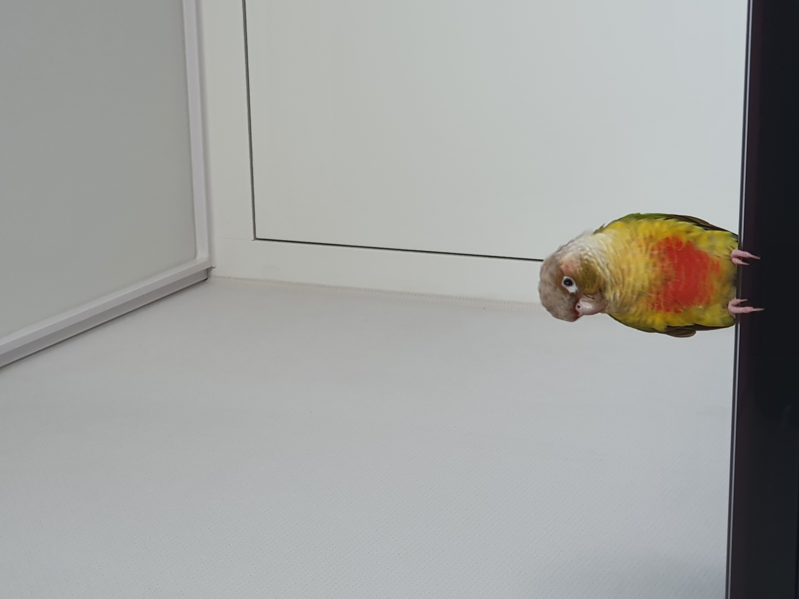
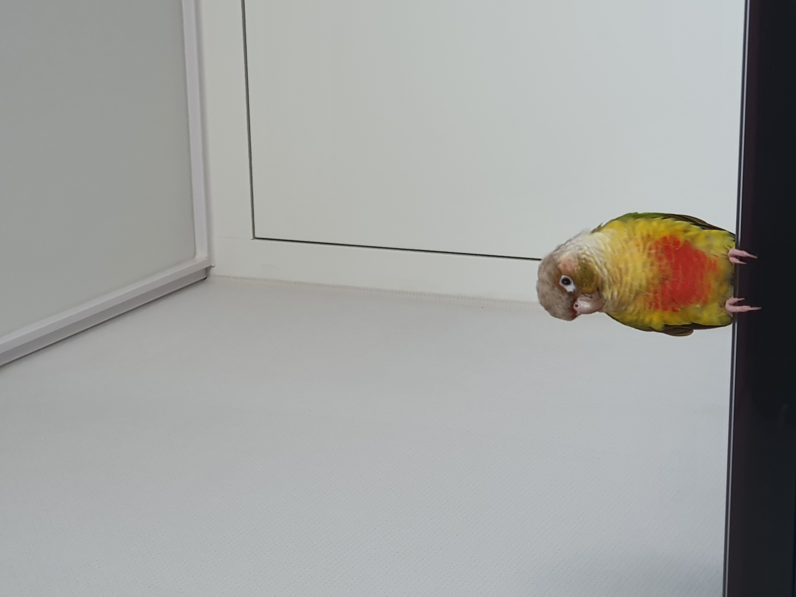

src 속성은 source(원본 위치)의 약자로 이미지의 위치(경로)를 설정하여 화면에 해당하는 이미지를 표현하는 속성이다.
절대경로 :
C:, D: 와 같은 보조 기억장치 이름부터 해당 파일이 위치하는 곳까지
모든 경로를 나열하여 찾아가는 방식
ex) C:\Users\MIRA\Desktop\html\views\07_imageTags.html
상대경로 :
현재 파일의 위치를 기준으로 찾고자 하는 파일의 경로를 탐색하는 방법
./ 파일명으로 시작 : 현재 폴더를 기준으로
../ : 현재 파일이 있는 폴더보다 한 단계 위(상위폴더)
ex)
'00_index.html' or './00_index.html' : 같은 폴더의 index 파일
'../resources/test.jpg' : 한 단계 위에 있는 폴더(상위폴더) 중 resources 폴더 안의 파일
'../../../test.jsp' : 3단계 위의 폴더 중 test 파일
 

사진의 경로가 잘못되었거나, 이미지가 훼손된 경우, 스크린 리더기로 화면에 접근했을 경우 사진을 글자로 대체해주는 속성